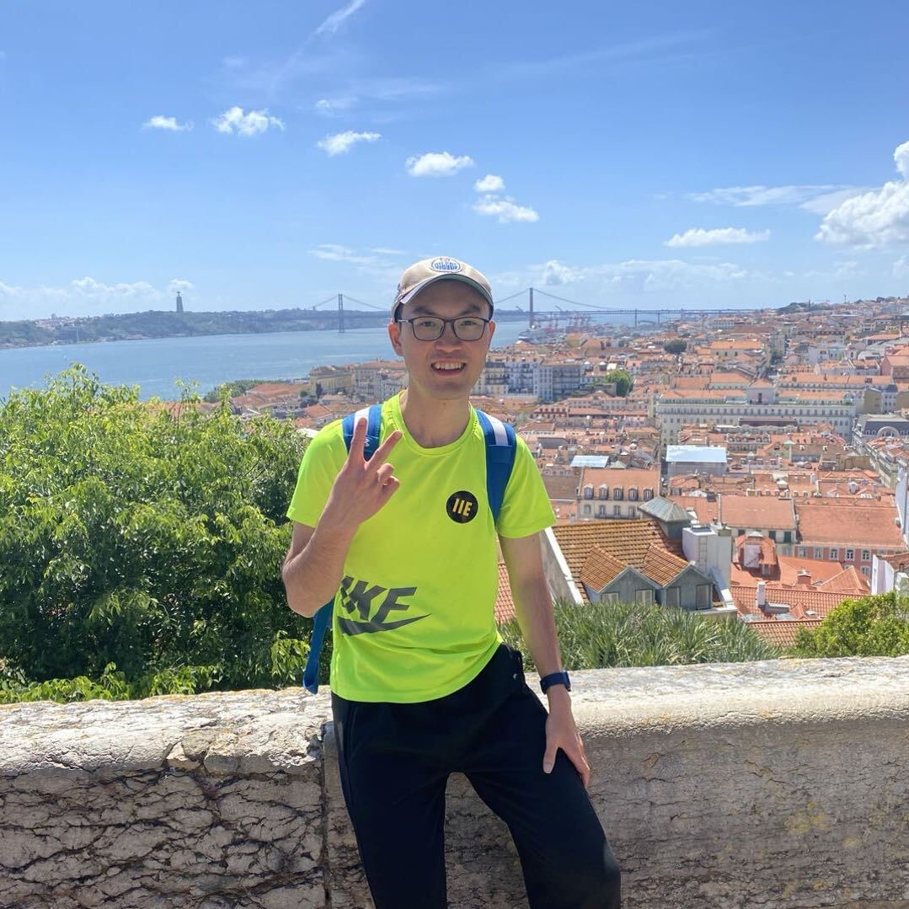

PhD in Physical Oceanography, University of Alberta (Supervisor: Dr. Paul Myers)
Thesis: Exploring the dynamics and thermodynamics of the Arctic Ocean's shelf seas using ocean model simulations and satellite altimetry.

Physical Oceanography | Climate Dynamics
Hello (你好, Hallo)! I am a PhD graduate in physical oceanography at the University of Alberta. My work explores the dynamics and thermodynamics of high-latitude oceans under global warming using NEMO ocean model simulations, hydrographic observations, satellite altimetry (e.g. SWOT), and process-based diagnostics.
I am especially interested in how heat, freshwater, eddies, sea ice, and atmospheric forcing shape ocean dynamics. My research has improved our understanding of Atlantic Water pathways and transformation in the Arctic Ocean, mesoscale eddies and their implications, Beaufort Gyre freshwater storage, and mixed layer temperature seasonality in Arctic shelf seas.
Academic background
Thesis: Exploring the dynamics and thermodynamics of the Arctic Ocean's shelf seas using ocean model simulations and satellite altimetry.
Thesis: Modelling the Atlantic Water along its poleward pathway into and through the Arctic Ocean.
Thesis: Sensitivity of Baffin Bay to exchanges through its gateway straits.
Training
Reading and seminar courses, advanced atmosphere-ocean dynamics, atmospheric modelling, and geophysical fluid dynamics.
Planet Earth, climate system, atmospheric modelling, the ocean, and violent weather.
Recognition